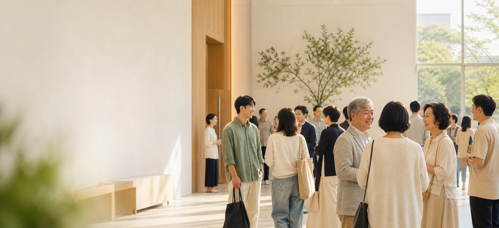

삶을 닮은 말씀
일요일의 고백이 평일의 선택으로 이어지도록 함께 배우고 질문합니다.

WELCOME TO ONMAEUM CHURCH
믿음이 익숙하지 않아도 괜찮습니다.
당신의 속도로 천천히 알아가세요.
OUR HEART
온마음교회는 말씀을 삶으로 이어가며, 서로의 오늘을 정성껏 돌보는 공동체를 꿈꿉니다.
완벽한 사람을 기다리지 않습니다. 질문이 있어도, 믿음이 아직 낯설어도 괜찮습니다. 하나님과 이웃을 알아가는 길을 함께 걷습니다.
우리의 이야기 보기일요일의 고백이 평일의 선택으로 이어지도록 함께 배우고 질문합니다.
배경과 속도가 달라도 한 사람을 있는 모습 그대로 따뜻하게 맞이합니다.
우리끼리 머무르지 않고 이웃의 필요를 살피며 작은 선의를 실천합니다.
주일예배
10:30어린이예배
4세–초등학생 · 꿈마루 1층청년예배
대학생·청년 · 온마음홀 2층수요기도회
누구나 · 작은예배실 3층RECENT STORIES
함께 장을 보고, 음식을 만들고, 천천히 안부를 나눈 토요일의 기록입니다.
답을 서두르지 않고 서로의 이야기를 듣는 작은 모임을 가졌습니다.
누군가의 이름을 기억하는 것부터 공동체는 시작됩니다.
LATEST MESSAGE
빠르게 답을 찾기보다 사랑 안에 오래 머무는 삶에 관해 이야기합니다.
THIS WEEK
YOUR FIRST SUNDAY
등록하지 않고 예배만 드려도 괜찮아요. 부담 없이 둘러보세요.
정해진 복장은 없습니다. 평소 주말에 입는 옷이면 충분합니다.
1층 안내 데스크에서 예배실과 어린이 공간을 안내해 드립니다.
헌금이나 등록은 선택입니다. 조용히 예배만 드리고 가셔도 괜찮습니다.